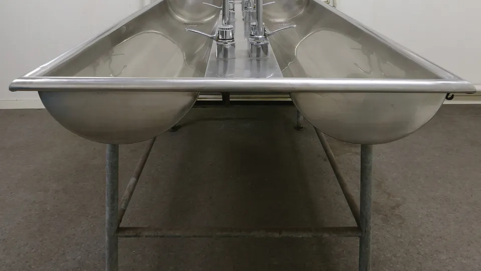
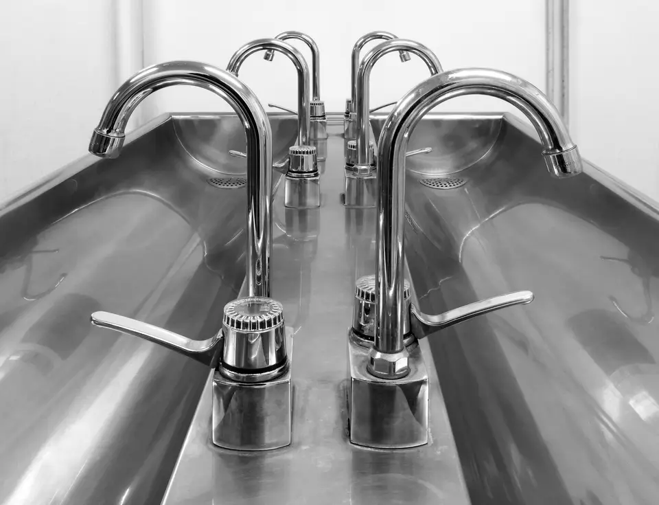
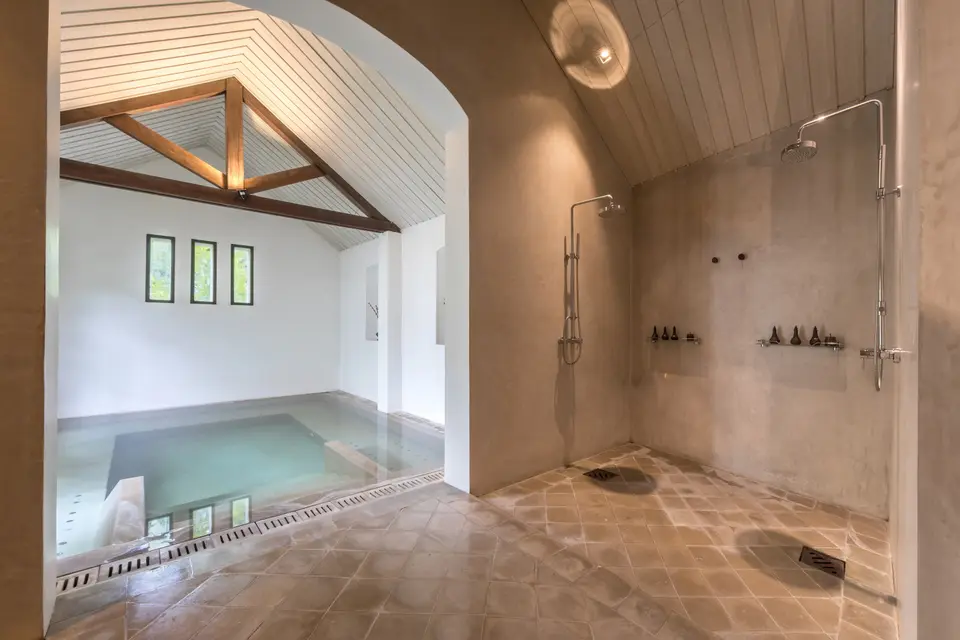
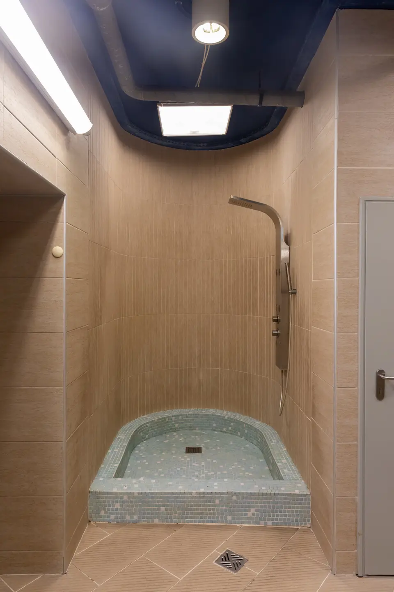

Arrivée d'eau et tuyauterie
Conception et modification de réseaux d'alimentation en cuivre brasé, multicouche et PER avec raccords sertis haute fiabilité.

Installation soignée, rénovation complète et maintenance de vos réseaux de plomberie sanitaire dans toute la métropole lyonnaise.
Assureur fictif, contrat n° DEMO-0001 : chaque chantier est couvert dix ans.
Une entreprise déclarée, établie à Lyon, joignable au 04 00 00 00 00.
Un chiffrage écrit après visite, sans surprise ni ligne cachée.
Des solutions durables et conformes aux normes pour tous vos équipements d'eau.
Conception et modification de réseaux d'alimentation en cuivre brasé, multicouche et PER avec raccords sertis haute fiabilité.
Remplacement préventif et pose de groupes de sécurité neufs pour protéger votre ballon d'eau chaude contre les surpressions.
Pose soignée de mitigeurs thermostatiques, mélangeurs muraux et colonnes de douche pour optimiser votre confort et débit.
Reprise complète des évacuations PVC et des distributions sanitaires pour vos projets de réaménagement de salle de bain.
Installation de bâtis-supports suspendus, robinets d'arrêt silencieux et flotteurs économes en consommation d'eau.
Localisation méthodique d'infiltrations d'eau non destructives et réfection rapide des sections endommagées.
Découvrez en images la rigueur de nos assemblages hydrauliques et la propreté de nos finitions.





Nous nous déplaçons quotidiennement sur Lyon et les communes limitrophes pour vos chantiers.
Une organisation transparente en 4 étapes claires pour sécuriser chaque intervention.
Vous décrivez vos besoins d'installation ou votre panne directement en ligne ou par téléphone.
Nous validons la configuration de votre réseau d'eau, les diamètres de tuyauterie et les accès.
Émission d'un devis clair et gratuit détaillant les fournitures sanitaires et la main d'œuvre.
Exécution des travaux selon les normes DTU en vigueur et contrôle d'étanchéité sous pression.
Quelques réponses concrètes pour vous guider avant toute intervention.
Une première estimation d'orientation est possible par échange téléphonique, mais la validation définitive des raccordements et des pressions nécessite un contrôle visuel sur place afin d'éviter toute mauvaise surprise.
Le cuivre reste la référence historique pour sa robustesse et sa longévité. Le multicouche offre une excellente résistance sans dilatation excessive. Nous sélectionnons la solution la plus adaptée à la configuration de vos cloisons.
Le groupe de sécurité doit être actionné une fois par mois pour chasser le calcaire. En cas d'écoulement permanent en dehors des heures de chauffe ou de blocage mécanique, son remplacement s'impose pour protéger la cuve.
Oui, tous nos chantiers de pose et rénovation bénéficient de notre garantie assurance décennale souscrite auprès de Assureur fictif sous le contrat DEMO-0001.
Contactez notre équipe pour toute question technique ou demande de chiffrage.
+33 4 00 00 00 00
contact@plombier.demo.invalid